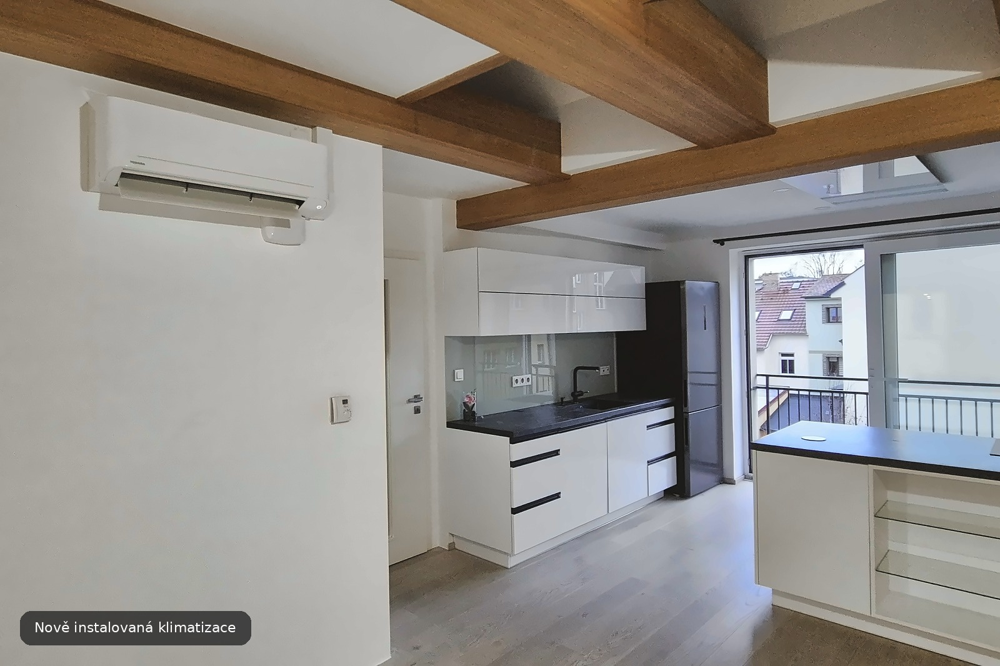
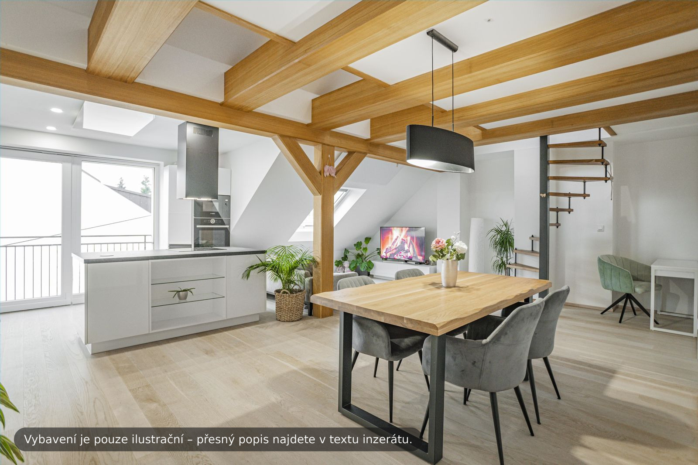
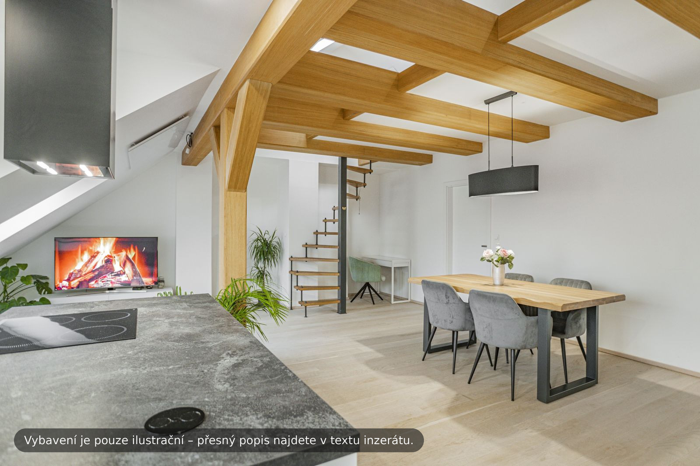
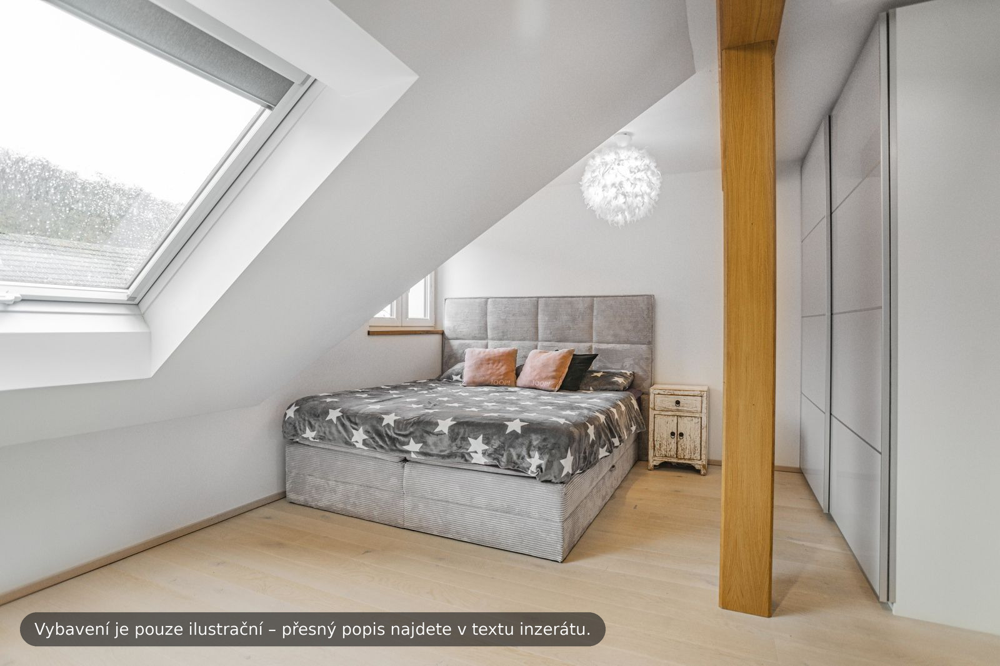
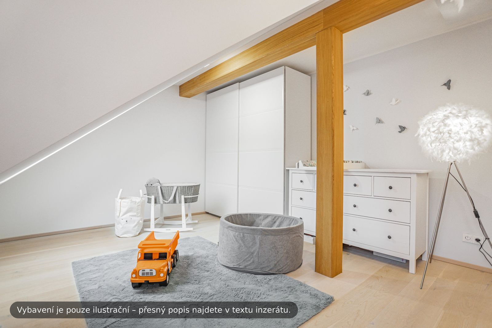
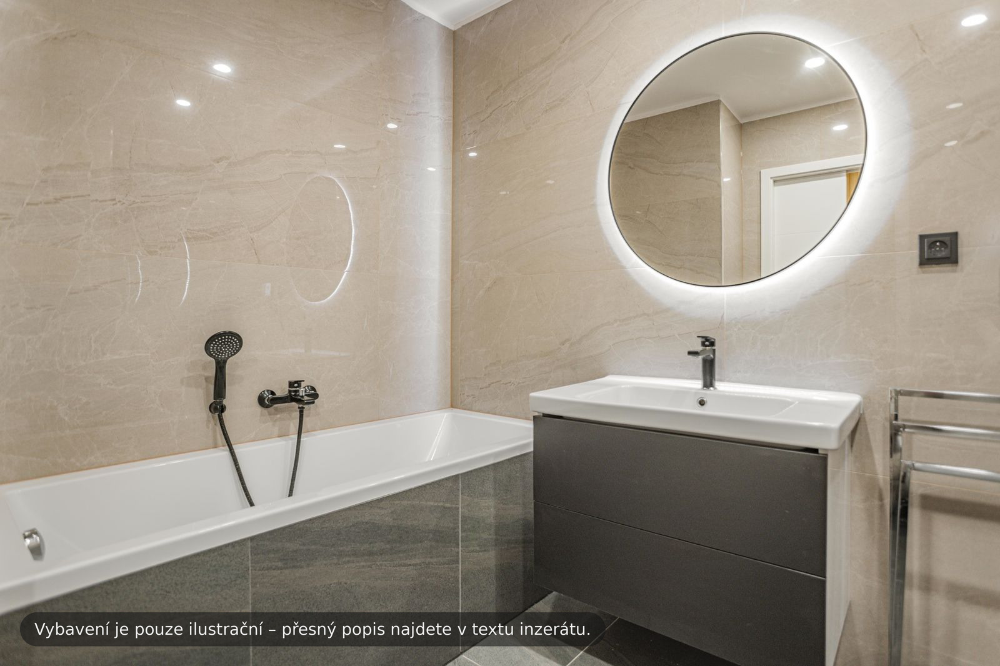
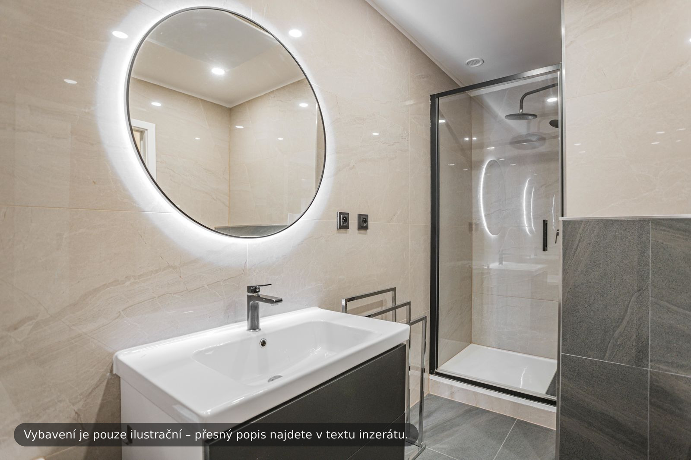
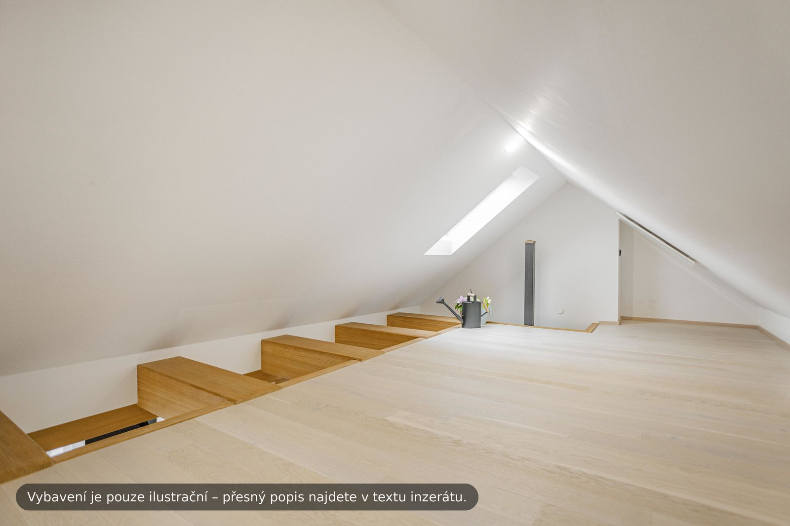
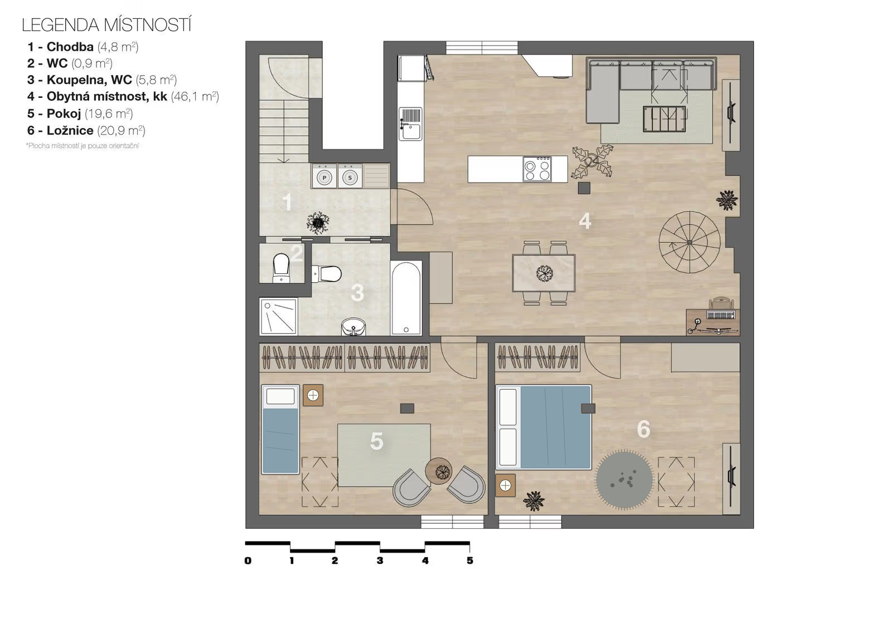
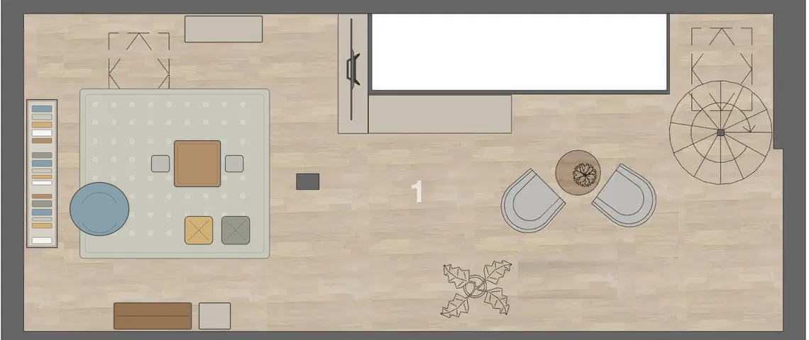

Shrnutí
| Typ nabídky | Dlouhodobý pronájem, přímo od majitele, bez provize |
|---|---|
| Adresa | Ulice Čechova, u Dvořákova náměstí, 278 01 Kralupy nad Vltavou (Lobeč) |
| Dispozice | 3+kk a galerie |
| Podlahová plocha | 105 m², k tomu galerie přibližně 20 m² |
| Patro | 3. patro, podkroví |
| Výtah | Není |
| Klimatizace | Ano |
| Balkon | Není. V obývacím pokoji je velké okno přibližně 2 × 3 m. |
| Koupelna | Vana i sprchový kout, dvě toalety |
| Pračka a sušička | Ano, obě v ceně nájmu, ve skříni v chodbě |
| Zařízení | Částečně zařízený: plně vybavená kuchyň, pračka, sušička a šatní skříně v obou ložnicích |
| Parkování | Na ulici, bez vyhrazeného místa. Přes den u domu, večer často ve vedlejším bloku do 5 minut chůze. |
| Domácí zvířata | Po dohodě, s ohledem na dřevěné podlahy a trámy |
| Kouření | Nekuřácký byt |
| Sklep | Ano, 3 m² (kola, pneumatiky) |
| Vytápění | Elektrické |
| Vratná kauce | 59 800 Kč |
| Volné od | Přibližně od 1. 12. 2026, po dokončení dílčí opravy koupelny. Prohlídky jsou možné už nyní. |
Proč tento byt
- Klimatizace. Podkrovní byt, který se v létě nepřehřívá.
- Velký obytný prostor. Obývací pokoj s kuchyní má 46 m², dřevěné trámy a podlahy a velké okno přibližně 2 × 3 m, které dává hodně světla.
- Dvě velké neprůchozí ložnice. 20,9 m² a 19,6 m², každá s velkou šatní skříní.
- Galerie asi 20 m² navíc. Může z ní být pěkná pracovna, herna, kutloch, nebo prostě jen sklad. Další pracovní kout se vejde do obývacího pokoje.
- Koupelna s vanou i sprchovým koutem a dvě toalety.
- Klidná část blízko centra. Obchody, školy a nádraží jsou v docházkové vzdálenosti.
Dispozice
| Chodba (skříň s pračkou a sušičkou) | 4,8 m² |
|---|---|
| Samostatné WC | 0,9 m² |
| Koupelna (vana, sprchový kout, WC) | 5,8 m² |
| Obývací pokoj s kuchyní | 46,1 m² |
| Pokoj | 19,6 m² |
| Ložnice | 20,9 m² |
| Součet místností | 98,1 m² |
Galerie
Na galerii vede točité schodiště z obývacího pokoje. Má přibližně 20 m², dřevěnou podlahu a střešní okno. Strop je šikmý, nejvyšší bod má přibližně 180 cm. V ploše 105 m² započítaná není.
Hodí se jako pracovna, herna, kutloch, nebo jen jako sklad. Záleží na vás.
V bytě zůstává
- Plně vybavená kuchyň: indukční deska, trouba, mikrovlnná trouba, lednice, myčka, osvětlený ostrůvek s odtahem par
- Velká šatní skříň v každé ložnici
- Klimatizace
- Pračka a sušička ve skříni v chodbě
- Sklep 3 m²
- Osvětlení v koupelně, v ostatních místnostech bodová světla nebo objímky
Přivezete si
- Postele, pohovku, jídelní stůl a židle, stolek pod TV
- Lustry nebo stínidla tam, kde jsou jen objímky
Oficiální podlahová plocha bytu je 105 m². Plochy jednotlivých místností podle půdorysu jsou orientační.
Na rovinu
- Galerie není plnohodnotný pokoj. Nejvyšší bod stropu je asi 180 cm. Na pracovnu, hernu nebo sklad je to dobrý prostor, na ložnici ne.
- Točité schodiště na galerii je pohledově hezké, ale vyžaduje opatrnost. Někomu to nevadí, někomu ano. Galerie je prostor navíc a celý běžný provoz bytu je na jednom podlaží, takže nahoru nikdo chodit nemusí. S malými dětmi stačí dát ke schodišti dětskou zábranu.
- Dům nemá výtah. Byt je ve 3. patře.
- Byt je v podkroví. V pokojích jsou šikmé stropy a střešní okna.
- K bytu nepatří parkovací místo. Parkuje se na ulici. Přes den bývá místo u domu, večer často až ve vedlejším bloku, do 5 minut chůze.
- Byt nemá balkon. Místo něj je v obývacím pokoji velké okno přibližně 2 × 3 m.
- Byt je zařízený částečně. Nábytek na fotografiích je ilustrační. Postele, pohovku, stůl a židle si přivezete vlastní.
Kolik zaplatíte celkem
| Nájem (majiteli) | 29 900 Kč |
|---|---|
| Záloha na vodu (majiteli) | 1 700 Kč |
| Elektřina (napřímo dodavateli, orientačně) | 3 500 Kč |
| Internet (napřímo poskytovateli, orientačně) | 500 Kč |
| Celkem měsíčně, přibližně | 35 600 Kč |
- Provize: žádná. Pronajímá přímo majitel.
- Vratná kauce: 59 800 Kč (dva nájmy).
- Smlouva: na jeden rok s možností prodloužení. Byt plánuji pronajímat dlouhodobě a o prodloužení se domluvíme s dostatečným předstihem, aby měly obě strany jistotu.
- Požaduji: ověření bezdlužnosti a pojištění odpovědnosti nájemníka.
- Majiteli platíte: 31 600 Kč měsíčně (nájem a záloha na vodu).
- Voda: 1 700 Kč je záloha. Jednou ročně se vyúčtuje podle skutečné spotřeby.
- Elektřina a internet: nájemník si je sjednává a platí napřímo. Částky jsou odhad podle dosavadní spotřeby. Elektřina závisí na používání klimatizace.
Fotografie
















Vybavení na fotografiích je pouze ilustrační.
Půdorys




Lokalita
- Ulice Čechova u Dvořákova náměstí, klidná část Kralup nad Vltavou (Lobeč), kousek od Dvořákova gymnázia.
- Vlak do Prahy: 30 minut na metro C (Vltavská) nebo metro B (Masarykovo nádraží). Na nádraží je to 10 minut chůze.
- Nákupy: potraviny 10 minut pěšky, funguje i rozvoz Rohlík.cz.
- Volný čas: procházky a cyklovýlety podél Vltavy, zámek Nelahozeves kousek za městem.
- V okolí jsou školy, školky, lékaři a restaurace.
Časté otázky
Platí se provize?
Ne. Byt pronajímá přímo majitel.
Kolik zaplatím měsíčně celkem?
Přibližně 35 600 Kč. Majiteli platíte nájem 29 900 Kč a zálohu na vodu 1 700 Kč, která se vyúčtuje podle skutečné spotřeby. Elektřinu (kolem 3 500 Kč) a internet (kolem 500 Kč) si platíte napřímo.
Dá se v bytě pracovat z domova?
Ano. Z galerie (asi 20 m²) může být samostatná pracovna, další místo je v obývacím pokoji. Internet si nájemník sjednává sám.
K čemu se hodí galerie?
Jako pracovna, herna, kutloch nebo sklad. Má asi 20 m², šikmý strop s nejvyšším bodem kolem 180 cm a vede na ni točité schodiště.
Dá se na galerii spát?
Na příležitostné přespání ano. Strop má nejvýš 180 cm, proto ji nenabízíme jako ložnici.
Je byt vhodný pro rodinu s dětmi?
Ano. Dvě velké ložnice, obývací pokoj, kuchyň i koupelna jsou na jednom podlaží. Na galerii vede točité schodiště, ke kterému se u malých dětí hodí dětská zábrana.
Je v bytě klimatizace?
Ano.
Můžu mít v bytě domácí zvíře?
Po dohodě. V bytě jsou dřevěné podlahy a pohledové dřevěné trámy, proto záleží na druhu a velikosti zvířete. Napište, jaké zvíře máte.
Jak daleko je nádraží a jak dlouho trvá cesta do Prahy?
Na nádraží je to 10 minut chůze. Vlak jede 30 minut na metro C (Vltavská) nebo metro B (Masarykovo nádraží).
Jaká je kauce a co pronajímatel požaduje?
Vratná kauce je 59 800 Kč. Požaduji ověření bezdlužnosti a pojištění odpovědnosti nájemníka.
Na jak dlouho je nájem?
Smlouva je na jeden rok s možností prodloužení. Byt plánuji pronajímat dlouhodobě a o prodloužení se domluvíme s dostatečným předstihem.
Kde se dá parkovat?
Na ulici. Přes den bývá místo přímo u domu, večer často ve vedlejším bloku do 5 minut chůze. Vyhrazené stání k bytu nepatří.
Odkdy je byt volný?
Přibližně od 1. 12. 2026. Byt je prázdný, dokončuje se dílčí oprava koupelny.
Mám zájem
Vyplňte prosím krátký dotazník, zabere dvě minuty. Vybraným zájemcům se ozvu s termínem prohlídky. Stejný byt najdete i na Bezrealitkách pod adresou Čechova, Kralupy nad Vltavou.
Zeptám se na:
- kolik vás bude v bytě bydlet,
- čím se živíte,
- kdy se plánujete nastěhovat a na jak dlouho,
- jestli máte domácí zvíře a jaké,
- jak jste se o bytě dozvěděli.